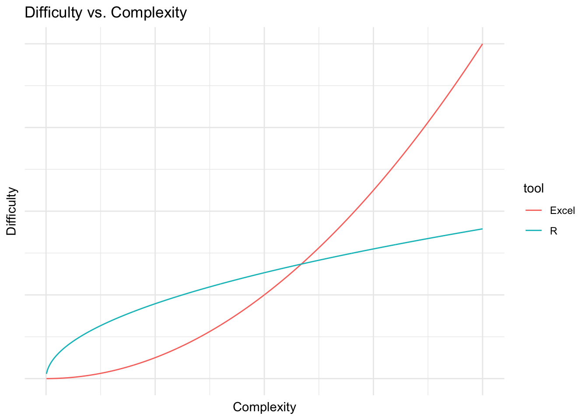
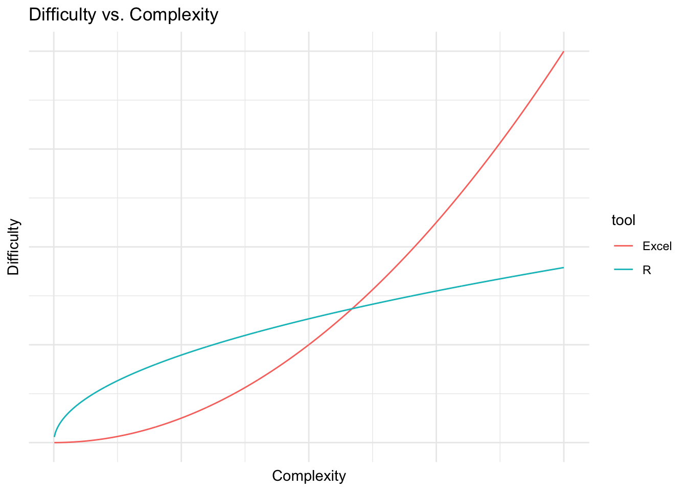

Warning: `data_frame()` was deprecated in tibble 1.1.0.
Please use `tibble()` instead.
This warning is displayed once every 8 hours.
Call `lifecycle::last_lifecycle_warnings()` to see where this warning was generated.
Like most people, I first learned to work with numbers through an Excel spreadsheet. After graduating with an undergraduate philosophy degree, I somehow convinced a medical device marketing firm to give me a job writing Excel reports on the orthopedic biomaterials market. When I first started, I remember not knowing how to anything, but after a few months I became fairly proficient with the tool, and was able to build all sorts of useful models. When you think about it, this is an amazing feature of Excel. Every day, all over the world, people open up a spreadsheet to do some data entry and then, bit by bit, learn to do increasingly complex analytical tasks. Excel is a master at teaching people how to use Excel.
R is not like that. I learned to use R as a side project during law school, and it felt a bit like training with an abusive kung-fu master in the mountains of rural China.
I couldn’t get R to do anything. It wouldn’t read in files, draw a plot or multiply two numbers together. All I could do was generate mystifying errors and get mocked on Stack Overflow for asking redundant questions. This was all made more frustrating by the fact that I could accomplish all of these things in Excel without much difficulty.
This is the basic pain of learning to program. Programming languages are designed to be general in their application and to allow you to accomplish a huge variety of complex tasks with the same basic set of tools. The cost of this generality is a steep learning curve. When you start learning to do basic tasks in R, you are also learning how to do complex things down the road. As you learn more and more, the marginal cost of complex analyses goes down. Excel is the opposite, and is very easy at the beginning, but the marginal cost goes up with the complexity of the problem. If you were to graph this it might look like this:
Warning: `data_frame()` was deprecated in tibble 1.1.0.
Please use `tibble()` instead.
This warning is displayed once every 8 hours.
Call `lifecycle::last_lifecycle_warnings()` to see where this warning was generated.
At the beginning, when you are trying to accomplish simple things like balancing a budget or entering some data by hand, R is definitely harder to learn than Excel. However, as the task gets more complex, it becomes easier to accomplish in R than Excel, because the core structures of Excel are designed for relatively simple use cases and are not the best for more complex problems. This isn’t to say that you can’t solve a lot of complex problems with Excel, it’s just that the tool won’t make it easy for you.
For a lot of us, the pain of learning to program feels like the pain of failure. When the program gives you an incomprehensible error message it feels like it’s telling you that you’re stupid and lack programming aptitude. But after programming for a while, you learn that nobody really understands those errors, and everybody feels like an imposter when their program fails. The pain you feel is not the pain of failure, it’s just the pain of learning.
The difficulty of learning a new tool is caused by two obstacles:
When you know how to use something you have this vast amount of basic vocabulary about that tool. I haven’t used Excel seriously for six years, but I can still remember all of its hot-keys, formula names, and menu structures. When you’re learning a new tool you don’t know any of this stuff, and that automatically makes it more difficult. Additionally, you might know where to look to find help on the old tool, or how to Google questions in such a way that you find useful answers. You don’t know any of these things about the new tool, which is painful.
The way the new tool wants you to think about the problem is different from the way you are used to thinking about the problem. For instance, if you are used to putting your analysis in a rectangular grid, then moving to a tool which is designed around procedural commands is going to be difficult.
In my opinion obstacle #2 is by far the larger barrier for Excel users. Most of the people who learn R have some basis in programming. The mental models underlying languages like Matlab or Python, as well as statistical packages like SPSS and SAS, have a lot in common with R, and there are many resources available for translating the bits which don’t make sense. Excel makes you think about analytical problems in a very different way, and there aren’t very many resources for translating the two paradigms.
Excel is based on the physical spreadsheet, or accountant’s ledger. This was a large piece of paper with rows and columns. Records were stored in the first column on the left, calculations on those records were stored in the boxes to the right, and the sum of those calculations was totaled at the bottom. I would call this a referential model of computation which has a few qualities:
$A1:C$36A1:An by 2, you will need 20 calculations: =A1 * 2, =A2 * 2, ...., =An * 2.Text based data analysis is different:
$A1:C$36 you name the data set when you read it in, and refer to it by that name whenever you want to do something with it. You can do this with Excel by naming ranges of cells, but most people don’t do this.Excel has only one basic data structure: the cell. Cells are extremely flexible in that they can store numeric, character, logical or formula information. The cost of this flexibility is unpredictability. For instance you can store the character “6” in a cell when you mean to store the number 6.
The basic R data structure is a vector. You can think of a vector like a column in an Excel spreadsheet with the limitation that all the data in that vector must be of the same type. If it is a character vector, every element must be a character; if it is a logical vector, every element must be TRUE or FALSE; if it’s numeric you can trust that every element is a number. There’s no such constraint in Excel: you might have a column which has a bunch of numbers, but then some explanatory test intermingled with the numbers. This isn’t allowed in R.
Iteration is one of the most powerful features of programming languages and is a big adjustment for Excel users. Iteration is just getting the computer to do the same thing over and over again for some period of time. Maybe you want to draw the same graph based on fifty different data sets, or read and filter a lot of data tables. In a programming language like R you write a script which works for all of the cases which you want to apply it to, and then tell the computer to do the application.
Excel analysts typically do a lot of this iteration themselves. For instance if an Excel analyst wanted to combine ten different .xls files into one big file, they would probably open each one individually, copy the data, and paste it into a master spreadsheet. The analyst is effectively taking the place of a for loop by doing one thing over and over again until a condition is met.
Another major difference is that programming encourages you to simplify your analysis by abstracting common functions from that analysis. In the example above you might find that you have to read in the same type of files over and over again and check that they have the right number of rows. R allows you to write a function which does this:
read_and_check <- function(file){
out <- read.csv(file)
if(nrow(out) == 0) {
stop("There's no data in this file!")
} else {
out
}
}All this function does is read in a .csv file and then check to see if it has more than zero rows. If it doesn’t, it returns an error. Otherwise it returns the file (which is called “out”). This is a powerful approach because it helps you save time and reduce errors. For instance, if you want to check if the file has more than 23 rows, you only have to change the condition in one place rather than in several spreadsheets.
There’s really no analog for these kinds of functions in an Excel-based workflow, and when most analysts get to this point they just start writing VBA code to do some of this work.
I thought I’d illustrate these principles by working through the example of joining two tables together in Excel and R. Let’s say that we had two data tables, one with some information about cars and another with the colour of those cars, and we want to join the two of them together. For the purpose of this exercise, we’re going to assume that the number of cylinders in a car determines its colour.
library(dplyr)
library(knitr)Warning: package 'knitr' was built under R version 4.1.2cars <- mtcars
colours <- data_frame(
cyl = unique(cars$cyl),
colour = c("Blue", "Green", "Eggplant")
)
kable(cars[1:10, ]) #kable is just for displaying the table| mpg | cyl | disp | hp | drat | wt | qsec | vs | am | gear | carb | |
|---|---|---|---|---|---|---|---|---|---|---|---|
| Mazda RX4 | 21.0 | 6 | 160.0 | 110 | 3.90 | 2.620 | 16.46 | 0 | 1 | 4 | 4 |
| Mazda RX4 Wag | 21.0 | 6 | 160.0 | 110 | 3.90 | 2.875 | 17.02 | 0 | 1 | 4 | 4 |
| Datsun 710 | 22.8 | 4 | 108.0 | 93 | 3.85 | 2.320 | 18.61 | 1 | 1 | 4 | 1 |
| Hornet 4 Drive | 21.4 | 6 | 258.0 | 110 | 3.08 | 3.215 | 19.44 | 1 | 0 | 3 | 1 |
| Hornet Sportabout | 18.7 | 8 | 360.0 | 175 | 3.15 | 3.440 | 17.02 | 0 | 0 | 3 | 2 |
| Valiant | 18.1 | 6 | 225.0 | 105 | 2.76 | 3.460 | 20.22 | 1 | 0 | 3 | 1 |
| Duster 360 | 14.3 | 8 | 360.0 | 245 | 3.21 | 3.570 | 15.84 | 0 | 0 | 3 | 4 |
| Merc 240D | 24.4 | 4 | 146.7 | 62 | 3.69 | 3.190 | 20.00 | 1 | 0 | 4 | 2 |
| Merc 230 | 22.8 | 4 | 140.8 | 95 | 3.92 | 3.150 | 22.90 | 1 | 0 | 4 | 2 |
| Merc 280 | 19.2 | 6 | 167.6 | 123 | 3.92 | 3.440 | 18.30 | 1 | 0 | 4 | 4 |
kable(colours)| cyl | colour |
|---|---|
| 6 | Blue |
| 4 | Green |
| 8 | Eggplant |
In Excel you would probably do this using the VLOOKUP() function, which takes a key, and a range, and then looks up the value of that key within that range. I put together an example spreadsheet of this approach here. Notice that in each lookup cell I typed some version of =vlookup(C4,$H$2:$I$5, 2, FALSE). This illustrates a few things. First, the calculation is the same shape as the data, and happens in the same file as the data. We have as many formulas as we have things that we want to lookup, and they are placed right next to the dataset. If you’ve used this approach you can probably remember making mistakes in the process of writing and filling this formula. Second, the data is referred to by its address on the sheet. If we move the lookup table to another sheet, or another place on this sheet, that is going to screw up out lookup. Third, notice that the first entry of the cyl column in the spreadsheet store in C2 is stored as text, which causes error in the lookup function. In R, you would have to store all the calendar values as a numeric or character vector.
To do the same thing in R, we would use this code:
left_join(cars, colours, by = "cyl") %>%
filter(row_number() %in% 1:10) %>% # to display only a subset of the data
kable() | mpg | cyl | disp | hp | drat | wt | qsec | vs | am | gear | carb | colour |
|---|---|---|---|---|---|---|---|---|---|---|---|
| 21.0 | 6 | 160.0 | 110 | 3.90 | 2.620 | 16.46 | 0 | 1 | 4 | 4 | Blue |
| 21.0 | 6 | 160.0 | 110 | 3.90 | 2.875 | 17.02 | 0 | 1 | 4 | 4 | Blue |
| 22.8 | 4 | 108.0 | 93 | 3.85 | 2.320 | 18.61 | 1 | 1 | 4 | 1 | Green |
| 21.4 | 6 | 258.0 | 110 | 3.08 | 3.215 | 19.44 | 1 | 0 | 3 | 1 | Blue |
| 18.7 | 8 | 360.0 | 175 | 3.15 | 3.440 | 17.02 | 0 | 0 | 3 | 2 | Eggplant |
| 18.1 | 6 | 225.0 | 105 | 2.76 | 3.460 | 20.22 | 1 | 0 | 3 | 1 | Blue |
| 14.3 | 8 | 360.0 | 245 | 3.21 | 3.570 | 15.84 | 0 | 0 | 3 | 4 | Eggplant |
| 24.4 | 4 | 146.7 | 62 | 3.69 | 3.190 | 20.00 | 1 | 0 | 4 | 2 | Green |
| 22.8 | 4 | 140.8 | 95 | 3.92 | 3.150 | 22.90 | 1 | 0 | 4 | 2 | Green |
| 19.2 | 6 | 167.6 | 123 | 3.92 | 3.440 | 18.30 | 1 | 0 | 4 | 4 | Blue |
Here we refer to the data by its name, use one function to operate on the whole table rather than row by row. Because consistency is enforced for each vector we can’t accidentally store a character entry in a numeric vector.
Now let’s say we wanted to get the mean displacement for each colour of car. Most Excel users would probably do this iteration manually, first selecting the table, sorting it by colour and then picking out the ranges that they wanted to average. A more sophisticated analyst would probably use the averageif() function to pick out the criteria they wanted to average on, and so avoid a few errors. Both approaches are implemented in the iteration tab of the spreadsheet.
In R you would do something like this:
left_join(cars, colours, by = "cyl") %>%
group_by(colour) %>%
summarize(mean_displacement = mean(disp)) %>%
kable()| colour | mean_displacement |
|---|---|
| Blue | 183.3143 |
| Eggplant | 353.1000 |
| Green | 105.1364 |
What this does is takes the data set, splits it up by the grouping variable, in this case colour, then applies the function in the summarize function to each group. Again, the difference is that we’re always referring to things by name rather than location, there is one line of code which applies the function to the whole dataset, and all of the iterative actions are stored in the script.
Functions are among the more difficult parts of learning to program, and you really can get by for quite a long time without ever learning to use them. I wanted to include them just because they are common and can be quite discouraging for Excel users because they are totally foreign to their workflow. A function is a way of using existing code on new objects. In the case above it might look like this:
join_and_summarize <- function(df, colour_df){
left_join(df, colour_df, by = "cyl") %>%
group_by(colour) %>%
summarize(mean_displacement = mean(disp))
}The things between the function() braces (df and colour_df) are called “arguments”, and when you call the function all it does is take the actual objects you supply to the function and plugs them in to wherever that argument appears between the curly braces. In this case we would plug in cars for the df argument, and colours for the colour_df argument. The function then basically replaces all the dfs with cars and colour_dfs with colours and then evaluates the code.
join_and_summarize(cars, colours) %>%
kable() | colour | mean_displacement |
|---|---|
| Blue | 183.3143 |
| Eggplant | 353.1000 |
| Green | 105.1364 |
Excel users have a strong mental model of how data analysis works, and this makes learning to program more difficult. However, learning to program will allow you to do things that you can’t do easily in Excel, and it really is worth the pain of learning the new model.